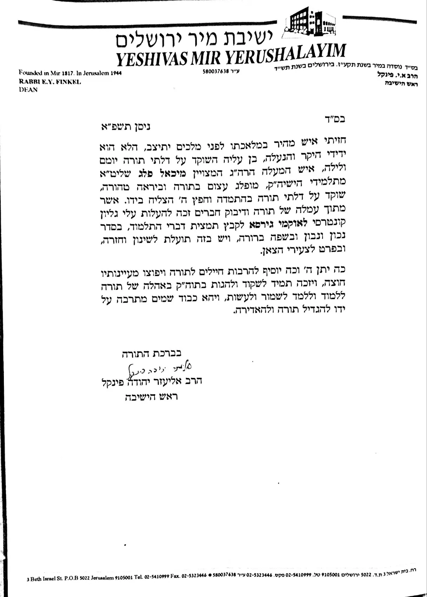
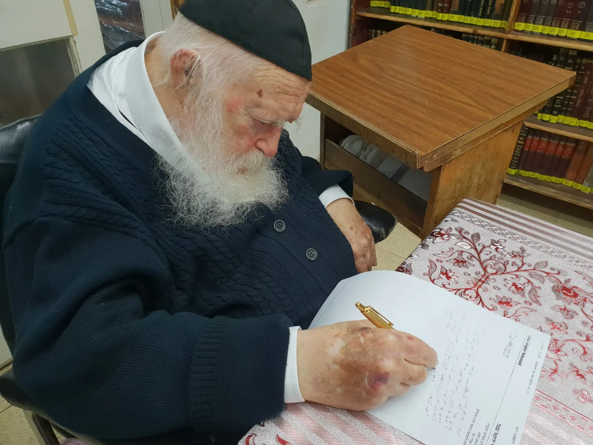
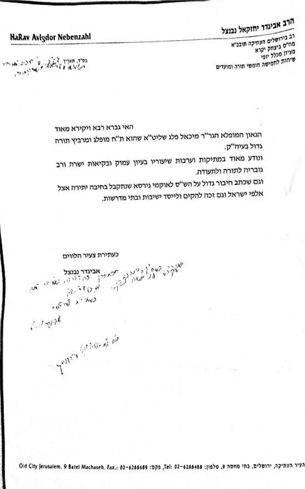
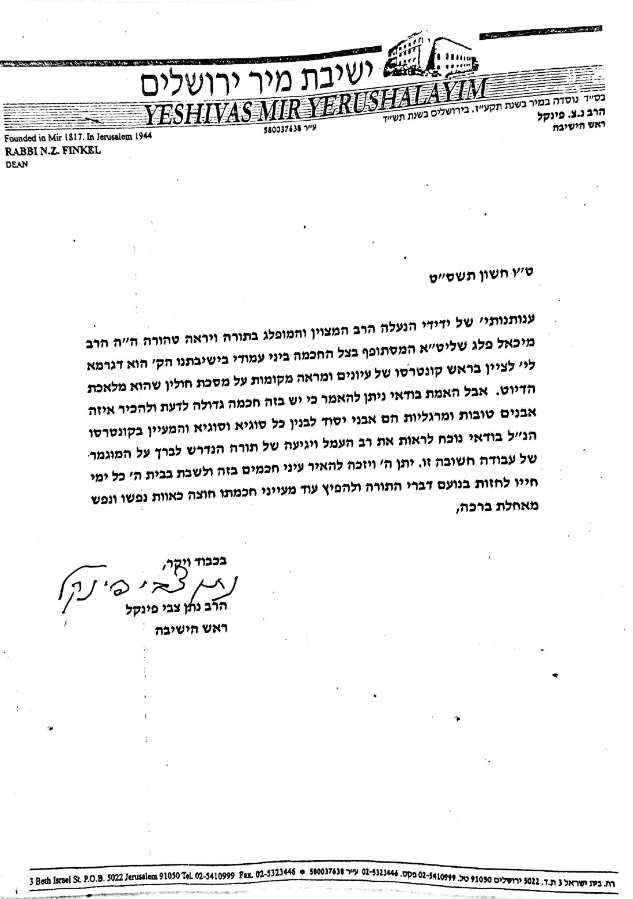
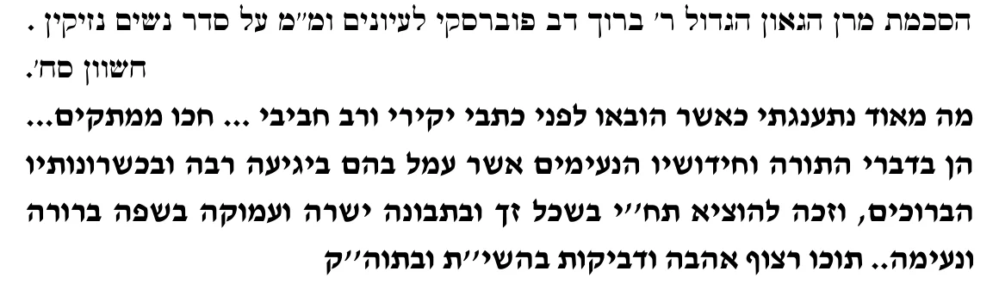
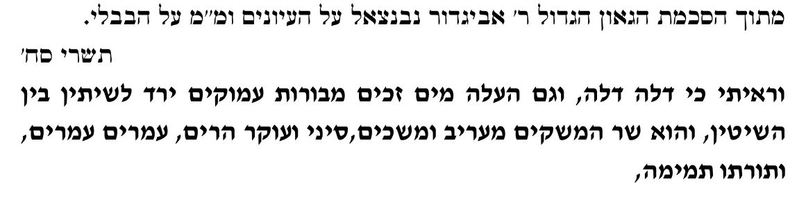

זה עשרים שנה, מאז יצאו לאור לראשונה בשנת תשס"ז, נלמדים ספרי לאוקמי גירסא בהיכלי הישיבות והכוללים. הסדרה, שחיבר מ. ח. מיכאל פלעג, יצאה מאז בשתים עשרה מהדורות ובלמעלה ממאתיים ושמונים אלף עותקים, והייתה לכלי יסוד בידי אלפי לומדים בחזרה ובשינון הש"ס.
לאוקמי גירסא אינו עוד סיכום על הגמרא - הוא הגמרא עצמה, מזוקקת. הוא פורש לפני הלומד את התלמוד הבבלי דף אחר דף, בלשון מדויקת שכל מילה בה נשקלה ונבחרה, כך שהסוגיה כולה - מן המשנה ועד המסקנה, על שאלותיה ותירוציה, ראיותיה ודחיותיה, שיטותיה ומחלוקותיה, עד הכרעתה וכל הדינים והכללים העולים ממנה - עומדת לנגד עיני הלומד בבת אחת, כבנין שלם שכל חלקיו גלויים. מי שלמד את הדף בעיון, חוזר עליו כאן בזמן קצר, ומה שעבר תחת ידו נקבע בזכרונו.
ואף מי שעדיין לא למד את הסוגיה לעומקה, עצם המבט במבנה שלה כפי שהוא נפרש כאן מעניק לו הבנה ראשונית רחבה: הוא תופס את קווי המתאר של הסוגיה, את מהלכה ואת יחס חלקיה זה לזה. וכשישב אחר כך ללמוד בעיון, ימצא את הכלים מוכנים לפניו, ורק יצוק לתוכם את הפרטים. ידיעת הכלל קודם לפרט היא שער להבנה, ומקלה על הלומד את העיון ואת הזכירה גם יחד.
מלאכת מחשבת בכל שורה
מאחורי כל שורה עומדת עבודה ארוכה ושקולה. כל מילה ומילה בגמרא נבחנה: מה מוכרח לגוף הסוגיה ומה אפשר לקצר בלי לחסר, היכן לשמור על לשון הגמרא כמות שהיא, והיכן לתרגם ולבאר בתוך השורה עצמה כדי שהדברים יתבררו מאליהם.
ובזה ייחודו: סיכומים רבים מספרים את הסוגיה במילים אחרות, ואילו לאוקמי גירסא משאיר את הלומד בתוך הגמרא. לשונה נשמרת, סדרה נשמר, וכל מימרא עומדת במקומה ובשם אומרה - אלא שהכל מזוקק, מחולק ומסומן, עד שהסוגיה נקראת כספר פתוח. הלומד אינו לומד על הגמרא; הוא לומד גמרא. כך נבנה הש"ס כולו, מסכת אחר מסכת, מתוך עמל של שנים רבות.
הזיכרון החזותי
כל עמוד נבנה כך שהעין זוכרת אותו, בזיכרון התוכן ובזיכרון החזותי גם יחד. כל יחידת מידע - קושיא, תירוץ, ראיה או דין - נקלטת בשורה אחת משלה, כך שמקומה בעמוד הוא עצמו סימן לזכירה. כותרות בצד השורה מסמנות את תחנות הדרך של הסוגיה - פתיחתה, המעבר לענין חדש, הראיה והמסקנה - כציוני דרך לאורך המסלול. המשנה ניכרת מן הגמרא, ושמות התנאים והאמוראים בולטים מגוף דבריהם. הלומד רואה את מבנה הסוגיה עוד לפני שקרא אותה, וכשהוא שב אליה, התמונה כבר ממתינה לו: הוא זוכר לא רק מה נאמר, אלא גם היכן נאמר. וזהו שאמרו חז"ל: "אין התורה נקנית אלא בסימנין".
התוכן במלואו
שום דבר מעיקר הסוגיה אינו נשמט. כל קושיא ותירוצה, כל ראיה ודחייתה, כל בעיא ופשיטתה, כל שיטה, מחלוקת ומסקנה - כולם כאן, כל אחד במקומו ובמשקלו. הקיצור אינו מוותר על התוכן אלא חושף אותו: הוא מסיר את מה שמכסה על הסוגיה - הכפילויות וחזרות הלשון - עד שמה שנשאר הוא הגמרא עצמה, שלמה ובהירה. החוזר על הדף בלאוקמי גירסא חוזר על הסוגיה כולה.
דיוק הניסוח
כל שורה מנוסחת בקפידה, בלשון קצרה ובהירה הנשענת על לשון הגמרא עצמה ועל לשון הלימוד המסורתית. לעיתים מילה אחת במקומה חוסכת שורות שלמות, ולעולם אין הקיצור בא על חשבון הדיוק.
סדר הסוגיה ומבנה
סדר הגמרא נשמר כפי שהוא. הקיצור אינו מסדר את הדברים מחדש ואינו מחליף את דרכה של הגמרא בדרך אחרת: הלומד צועד בדיוק בשביל שהגמרא סללה, אלא שצעדיו מהירים וברורים יותר.
מקור הדברים: "פתח פומיך קרי" (עירובין נ"ד.)
אמר ליה שמואל לרב יהודה: שיננא, פתח פומיך קרי, פתח פומיך תני, כי היכי דתתקיים בך ותוריך חיי, שנאמר "כי חיים הם למוצאיהם ולכל בשרו מרפא".
רבא: אימתי שמחה לאיש - בזמן שמענה פיו.
רב חסדא: אין תורה נקנית אלא בסימנין, שנאמר "שימה בפיהם".
שם: "הציבי לך ציונים" - עשו ציונים לתורה. "אמור לחכמה אחותי את ומודע לבינה תקרא" - עשה מודעים לתורה.
התענוג הנצחי הגדול ביותר הקיים עלי אדמות הוא ללמוד ולהגות בתורת ה', לחזור ולשנן, ובייחוד בתורה שבעל פה, אשר בסגולתה ובכח קדושתה מרוממת את האדם מעל גבוה, להידבק בש"ס ובתורתו. ואין שמחה ואושר גדול יותר מעמל בתורה שמענה פיו, כי קרוב אליך הדבר מאוד - בפיך ובלבבך לעשותו.
עשרים שנה בהיכלי התורה
מאז הופיעו החוברות הראשונות בשנת תשס"ז, זה עשרים שנה, יצא לאוקמי גירסא בשתים עשרה מהדורות ובלמעלה ממאתיים ושמונים אלף עותקים. הוא נלמד בישיבות ובכוללים בכל רחבי עולם התורה, הליטאי והחסידי כאחד, מלווה בחורי ישיבות ואברכי כוללים בחזרה ובשינון הש"ס, ומשמש כלי עזר נאמן לנבחנים במבחני "דרשו", ב"שננתם" ובמפעל הש"ס.
ראשית הדרך
סדרת ספרי לאוקמי גירסא נולדה ונוצרה לבקשתו ובשליחותו של מרן הגאון הגדול רבי גרשון אדלשטיין זצ"ל, ראש ישיבת פוניבז', שמסר נפשו וכל כוחו על החדרת ענין ידיעת התורה בהיקף ובבקיאות, בחזרה ובשינון, עד שיהיו דברי תורה שגורים בפי הלומדים; והמחבר נמנה על תלמידיו המובהקים וזכה לקרבה מיוחדת אליו.
המלאכה כולה נעשתה בהתייעצות קבועה עם מרן הגאון הגדול רבי חיים קנייבסקי זצ"ל, שליווה את המפעל באופן אישי לאורך כל הדרך, והשיב ברוחב דעתו על שאלות רבות שעלו במהלך העבודה ונדרשה בהן הכרעה. ובהגיע המלאכה לסיומה, נערך סיום הש"ס על לאוקמי גירסא בביתו של מרן זצ"ל ובמעמדו.
לצפייה בתמונות מעמד סיום הש"ס בבית מרן הגר"ח קנייבסקי זצ"ל
הסכמות גדולי ישראל
על לאוקמי גירסא ועל שאר חיבורי המחבר ניתנו הסכמות מגדולי ישראל, מרנן ראשי הישיבות והאדמו"רים. לפניכם מקצתן.
"חזיתי איש מהיר במלאכתו לפני מלכים יתיצב... שוקד על דלתי תורה בהתמדה, וחפץ ה' הצליח בידו, אשר מתוך עמלה של תורה ודיבוק חברים זכה להעלות עלי גליון קונטרסי לאוקמי גירסא, לקבץ תמצית דברי התלמוד, בסדר נבון ונכון, ובשפה ברורה, ויש בזה תועלת לשינון וחזרה, ובפרט לצעירי הצאן."
לצפייה במכתב המקורי


"...שהוא ת"ח מופלג ומרביץ תורה גדול בעיה"ק ירושלים, ונודע מאוד במתיקות ועריבות שיעוריו בעיון עמוק, ובקיאות ישרה, ורב גובריה לתורה ולתעודה... ועתה שכתב חיבור גדול על כל הש"ס 'לאוקמי גירסא', שנתקבל בחיבה יתרה אצל אלפי ישראל..."
לצפייה במכתב המקורי

"...אבל האמת בודאי ניתן להאמר כי יש בזה חכמה גדולה לדעת ולהכיר איזה אבנים טובות ומרגליות הם אבני יסוד לבנין כל סוגיא וסוגיא, והמעיין בקונטרסו הנ"ל בודאי נוכח לראות את רב העמל ויגיעה של תורה הנדרש לברך על המוגמר של עבודה חשובה זו..."
לצפייה במכתב המקורי

"מה מאוד נתענגתי כאשר הובאו לפני כתבי יקירי ורב חביבי... הן בדברי התורה וחידושיו הנעימים אשר עמל בהם ביגיעה רבה ובכשרונותיו הברוכים, וזכה להוציא תח"י בשכל זך ובתבונה ישרה ועמוקה בשפה ברורה ונעימה... תוכו רצוף אהבה ודביקות בהשי"ת ובתוה"ק."
לצפייה בנוסח ההסכמה

"וראיתי כי דלה דלה, וגם העלה מים זכים מבורות עמוקים, ירד לשיתין בין השיטין, והוא שר המשקים מעריב ומשכים, סיני ועוקר הרים, עמרים עמרים, ותורתו תמימה."
לצפייה בנוסח ההסכמה

על התורה
עיונים ומראה מקומות
על כל פרשיות התורה, הנ"ך וחמש מגילות, כל פרשה בחוברת נפרדת. ריכוז סדור של כלל העיונים ומראי המקומות על הפרשה.
תורה שלמה
היצירה המונומנטלית הגדולה והמקיפה ביותר על ביאור התורה שבכתב. על פרשיות ספר דברים. לכתבה על השלמת הסדרה
על הנ"ך
נ"ך המפורש
על כ"ד ספרים. פירוש ערוך ומשולב בקיצור נמרץ מכל גדולי מפרשי הנ"ך, מילה במילה: הפירוש שזור בתוך הפסוקים עצמם, כך שהלומד קורא את הכתוב ומבינו כסדרו, בלי לדלג בין עמודים ובין מפרשים. ניתן להוריד גם ישירות מאתר נ"ך המפורש.
תלמוד בבלי
לאוקמי גירסא
על כל מסכתות הש"ס, בסט שלם ובכרכים בודדים. קיצור התלמוד הבבלי לחזרה ולשינון, שהאתר הזה מוקדש לו. ניתן להוריד גם ישירות מאתר זה.
עיונים ומראה מקומות
על כל סדרי מועד, נשים ונזיקין. עיונים ומראי מקומות על סוגיות הש"ס, המכוונים את הלומד אל אבני היסוד של כל סוגיה ואל מקורותיה.
שיננא
על כל מסכתות הש"ס, בחוברות כיס ובגליונות, לשינון הש"ס בכל מקום ובכל עת.
שואל ומשיב
מאות שאלות ותשובות על סדר המסכת, לבחינה עצמית, לשינון ולחזרה: הלומד בוחן את עצמו על מה שלמד ויודע היטב היכן הוא עומד. ניתן להוריד ישירות מאתר התלמוד הבבלי.
שולחן ערוך
לאסוקי שמעתתא
על סדר אבן העזר ועל סדר חושן משפט, ולבחינות ברבנות. מסלול סדור מן הסוגיה אל ההלכה, ללומדי הלכה ולנבחנים בבחינות הרבנות.
מועדים
פעמייך
עיונים ומראה מקומות על המועדים, בהיקף הפרד"ס השייך לכל ענין.
זוהר
כתבי הזוהר הקדוש עם המפרשים, ללימוד חופשי באתר ממלכת הזוהר.
זוהר רבא
כל כתבי הזוהר הקדוש על סדר הפרשה: על כל פרשיות התורה, על כל הנ"ך ועל המועדים. במקום אחד מוצא הלומד את כל מה שנאמר בזוהר על הפרשה ועל הפסוק שלפניו.
זוהר גירסא
כל כתבי הזוהר הקדוש על סדר הזוהר, בצורה סדורה ומקוטעת, עם כותרת וסיכום על כל קטע וקטע, בתוספת הערות, על הסדר.
רזא דפרשתא
הזוהר על פרשת השבוע בתרגום ללשון הקודש, ובין מילותיו ביאור שזור מתוך דברי המפרשים, כך שהלומד מבין את דברי הזוהר כסדרם.
חומש רשב"י
תמצית כל החידושים שנדרשו בזוהר ונלמדו מדיוקי לשון כל מילה ומילה בתורה, על סדר הפרשה.
הלימוד באתר פתוח לכל וללא תשלום. מצאתם טעות? אפשר להציע תיקון ישירות בדף הגמרא. הגמרא המנוקדת והפירוש מוצגים ברישיון, ומפורטים בעמוד מקורות.